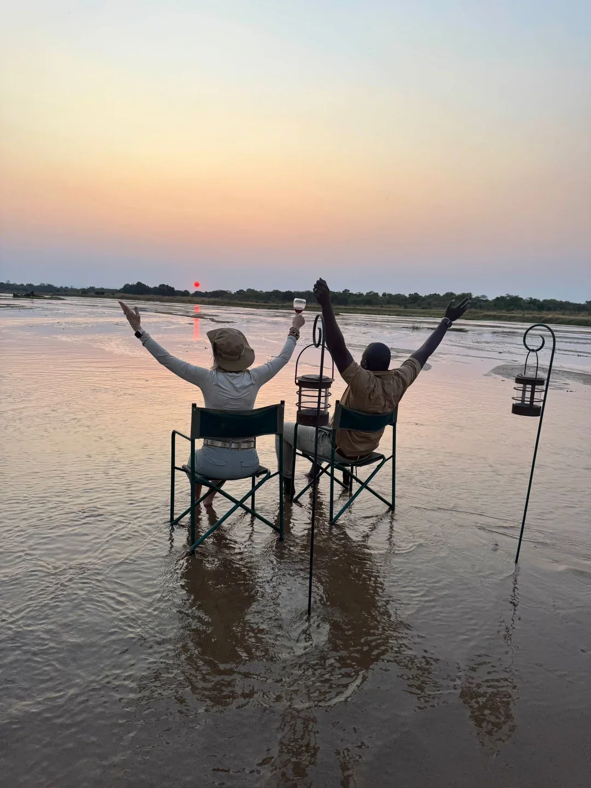
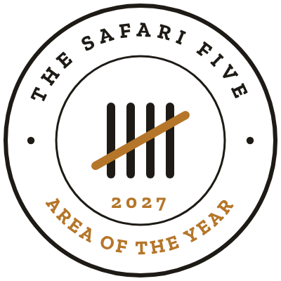

The Hall of the Five is open
The Safari Five app is live, and the Hall of the Five is ready for its first names. Here is how to earn your place.
Read more →
The Hall of the Five
First name and last initial, the month and year they finished, the country they did it in and where they call home. Every name here sent in a checklist stamped in a Safari Five area, and every entry is reviewed before it appears. We may remove any entry we believe is not genuine (see our terms).
| Name | Month/year completed | Country completed | Home country |
|---|---|---|---|
| No names yet. The Hall of the Five fills as people complete the Safari Five. | |||
Get the app, do all five, and send in your stamp.
Get the app
The Safari Five Award
Each calendar year, the Safari Five area with the most names entered in the Hall of the Five wins the Safari Five Area of the Year. We announce the winner in the Newsroom each January, and every camp and operator in the winning area may show the Area of the Year badge for that year on its website and in camp.
The first award covers 2027. Only entries approved for the Hall count, by the area they were stamped in. A tie is shared. Award decisions are ours and final (see our terms).
The race for 2027 has not started yet. The first names in the Hall will put their area on the board.
Newsroom
Updates, stories, articles and milestones from the Safari Five.